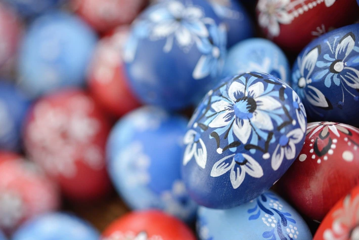
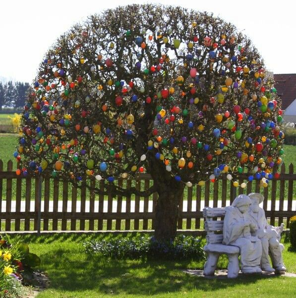
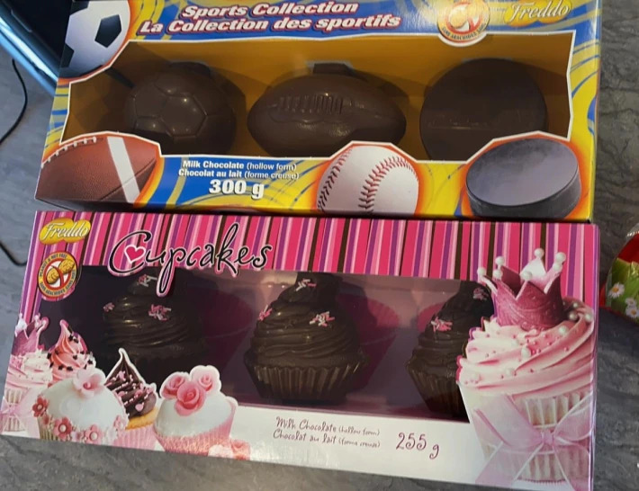
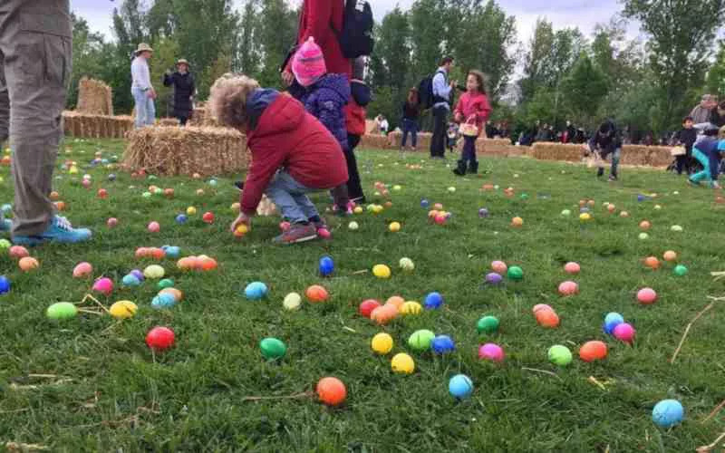
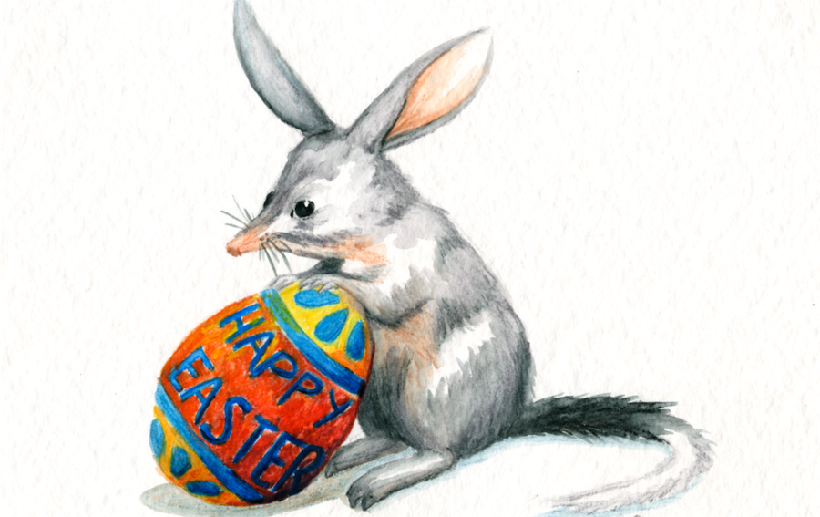
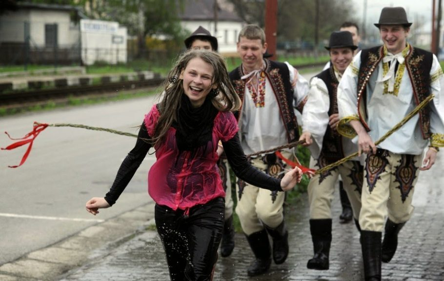
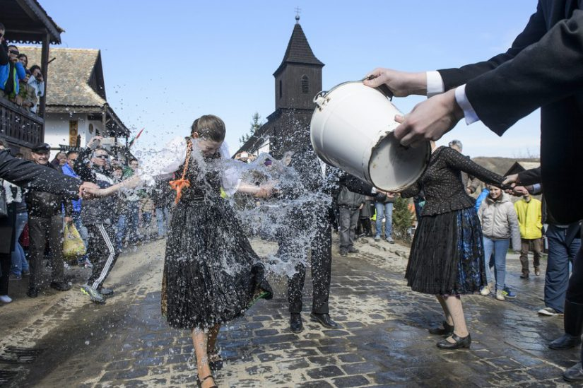

Pascoa no mundo
-
O coelhinho traz os ovos no Brasil e em vários lugares, caso do Chile. Na Austrália, esse trabalho é do Bilby. Já o símbolo desta época na França são os sinos. A Páscoa em outros países do mundo guarda tradições e curiosidades como delícias doces na Europa e a festa para a primavera no Japão.
-
O artesanato de ovos pintados à mão se mantém na República Tcheca, assim como na Alemanha, onde coloridas árvores de Páscoa na Alemanha enfeitam casas e ruas. No domingo, em várias partes do mundo as crianças brincam de caça aos ovos de chocolate. Tem ainda a Segunda-Feira de Páscoa – Pasquetta na Itália ou Easter Monday no Canadá.
-
Entre as procissões com alegorias gigantescas na Guatemala ou a irreverência da Easter Parade de Nova York, são muitos os eventos normalmente realizados nas cidades. Os festejos tiveram de ser suspensos ou encolheram em tamanho, já que precisamos conter a propagação do coronavírus. Para pensar em viagens pós-pandemia na Semana Santa, vai aqui uma ideia da Páscoa em países mundo afora:

Árvore de Páscoa na Alemanha
-
A Páscoa na Alemanha é uma época cheia de tradições. Eu já estive no país nessa época e passei por diversas cidades (Berlim, Munique, Nuremberg, Stuttgart e Frankfurt). As lojas ganham coelhinhos e ovos na decoração e o chocolate muitos formatos temáticos também. Como ocorre com os mercados de Natal na Alemanha, são montadas feiras de Páscoa. Ainda não sabemos como ficaram esses eventos no pós-pandemia, mas antes eram cerca de 600 mercados pelo país, segundo o Centro de Turismo Alemão.
-
O mais colorido e diferente costume alemão é a árvore de Páscoa; em alemão, Osterbaum. As casquinhas de ovos pintadas à mão pelas famílias são penduradas nos galhos pelados pelo frio que se despede, em parques e jardins. No Brasil, a população da catarinense Pomerode mantém essa herança trazida pelos imigrantes.

Caça aos ovos nos Estados Unidos, no Canadá e na Inglaterra
-
Sucesso de Páscoa entre as crianças
é fazer uma caça aos ovos. Na Grã-Bretanha, a National Trust organiza trilhas na natureza para a meninada da Inglaterra,
do País de Gales e da Irlanda do Norte – no site da organização, para download, há pacotes de brincadeiras de Páscoa para crianças fazerem em casa (em inglês).
-
Do outro lado do Atlântico,
Washington tem a conhecida Easter Egg Roll da Casa Branca,
evento que inclui de jogos a apresentações, cancelado pelo segundo ano por causa da covid-19.
A White House Historical Association
montou atividades online para fazer a caça aos ovos virtual na residência do presidente dos Estados Unidos
, quebra-cabeça digital e desenhos para fazer download e colorir, entre outras brincadeiras.
-
A meninada também participa de caças aos ovos em praças na Páscoa do Canadá, organizadas por prefeituras ou centros comunitários. Moradora de Montréal, minha irmã, Carla, comprou ovos temáticos para esconder para os filhos pequenos na Chasse au Trésor de Pâques. Julia, de 10 anos, vai encontrar chocolate em forma de cupcake e Rafael, de 9, arredondados em bolas de diversos esportes. Como o tempo deu uma virada e voltou a cair neve nesta semana da primavera, a brincadeira será interna.

Festa do chocolate em Bariloche e Paris.
-
Diz a tradição de Páscoa na França que os sinos ficam sem tocar de quinta a
sábado da Semana Santa porque voam até Roma para serem abençoados. No retorno, eles deixam cair ovos, galinhas, pintinhos e coelhos de chocolate, caçados pelas crianças no domingo. Em Paris, os chocolatiers se superam com lindas criações nesta época do ano.
-
Diz a tradição de Páscoa na França que os sinos ficam sem tocar de quinta a sábado da Semana Santa porque voam até Roma para serem abençoados. No retorno, eles deixam cair ovos, galinhas, pintinhos e coelhos de chocolate, caçados pelas crianças no domingo. Em Paris, os chocolatiers se superam com lindas criações nesta época do ano.

Nada de coelho na Austrália e na Nova Zelândia
-
Coelhos foram levados pelos europeus à Oceânia e atualmente são vistos como peste. Existe até a Rabbit Free Australia, associação criada para lidar com o problema da superpopulação dos animais, o que prejudicar o ecossistema e a agricultura local. Lá, então, quem aparece na Páscoa é o Bilby, pequeno marsupial, mesma família dos cangurus. Marcas de chocolate fazem guloseimas com formato do bichinho, ameaçado de extinção, e revertem dinheiro para um fundo pela sua preservação.
-
Para livrar dos coelhos as fazendas de Otago, na Nova Zelândia, em torno de 500 caçadores participam todo ano da Great Easter Bunny Hunt. Como a caçada não é realizada desde 2017 (por causa de outro vírus, do risco de incêndio na região e da covid-19), são dois dias em vez de 24 horas de evento em 2021.

Tradição pagã e cristã na República Tcheca
-
Um dos pontos de peregrinação mais importantes da República Tcheca é o mosteiro de Velehrad, no norte da República Tcheca. Fundado no século 13, é lugar de celebração das liturgias da Páscoa e da ressurreição. A Páscoa na região de Valašsko (leste do país) é realizada no museu ao ar livre em Rožnov pod Radhoštěm, que mostra como as pessoas viviam no século 19 nessa parte da Morávia Oriental. Inclui feira de artesanato e uma tradição que vem da época pagã, a pomlázka. Na Segunda-Feira de Páscoa, os rapazes dão palmadas simbólicas nas moças com ramos de salgueiro entrelaçados e recebem doces de volta. Antigamente acreditava-se que isso garantia a fertilidade. Embora o significado original tenha desaparecido, a tradição se mantém.

Bruxas e histórias macabras nos países nórdicos
-
As curiosidades em relação à nossa Páscoa são diversas nos países nórdicos. Crianças se fantasiam de bruxas na Finlândia e na Suécia, numa espécie de Halloween fora de época. Páscoa na Noruega é tempo de ler ou ver na TV histórias sobre crimes, chamadas de Påskekrims.

Curiosidades sobre a pascoa
O ovo aparece em muitas tradições antigas como um símbolo da vida, ou do início dela. Civilizações não-cristãs utilizaram o ovo, inclusive decorado para comemorar o equinócio da Primavera e a Vida. O cristianismo absorveu e adaptou a tradição, mesclando-a com seus rituais. Antigamente os ovos não eram de chocolate, mas sim de galinha vazios e pintados com flores, cascas de cebola e outros corantes naturais.
Muitas pessoas não entendem o porquê do coelho ser o símbolo da Páscoa. A explicação é simples. O coelho é o símbolo da fertilidade e, consequentemente, da vida.
Em muitos países da Europa, até hoje, existe a crença de que comer ovos de chocolate no Domingo de Páscoa traz saúde e sorte durante todo o ano. Em outros lugares do mundo acredita-se que colocar na mesa um ovo de galinha, na Sexta-feira Santa, afasta doenças.
Desenvolvido por Eduardo - Duzzin ©